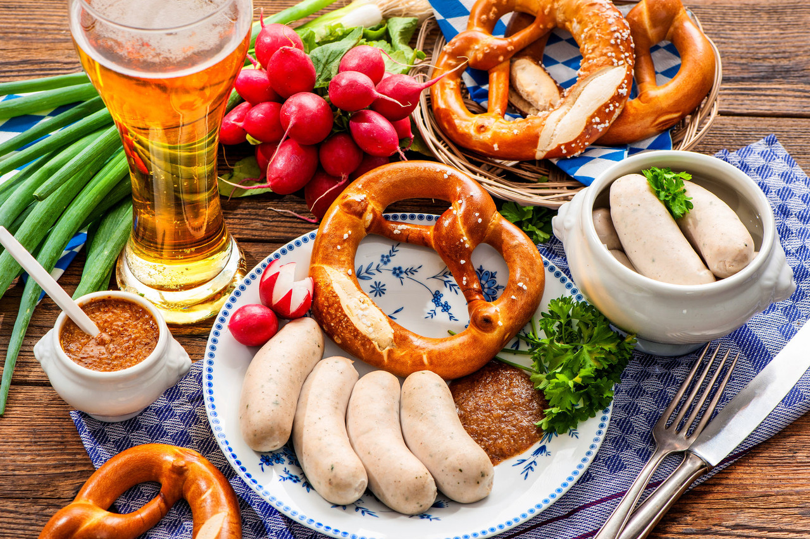

Kuchnia
Typowo niemiecka kuchnia zanika, a rosną wpływy kuchni innych krajów. Jako pierwsza zdobyła niemieckie podniebienia kuchnia włoska, która przybyła tam z początkiem lat 1960. wraz z włoskimi „Gastarbeiterami”. Potrawy takie jak pizza i pasta są dziś bardziej popularne niż dawniej typowy zestaw: ziemniaki, kiszona kapusta, marynowana pieczeń. Popularna jest również kuchnia grecka, kuchnia chińska i kuchnia turecka, ta ostatnia reprezentowana jest przez tysiące małych barów „fast food” zwanych w Niemczech Imbiss i potrawy jak np. Döner, oprócz tego można w niemieckich miastach znaleźć prawie wszystkie egzotyczne restauracje włącznie z rosyjskimi, tajskimi, polskimi i japońskimi, w tym barami sushi. Najmocniejszą pozycję tradycyjna niemiecka kuchnia zachowała w małych miastach i osadach.
W odżywianiu Niemców dużą rolę pełni chleb. Uważa się, że Niemcy są państwem, w którym istnieje najwięcej różnych gatunków chleba. Kuchnia niemiecka jest bardzo pożywna, królują w niej ziemniaki i wieprzowina. Mięsa wieprzowego używa się do wyrobu kiełbasy (Wurst), która jest nie tylko popularną przekąską, ale i podstawowym elementem kuchni. W Bawarii są, np. specjalne Wurstküchen (kuchnie kiełbasowe).
Mięso w kuchni niemieckiej proponuje się w bardzo różnorodnej postaci – peklowana i wędzona pieczeń wieprzowa (Kassler), pieczeń (Schweinebraten). Dodatkiem do mięsa są najczęściej ziemniaki smażone, gotowane lub np. w postaci sałatki ziemniaczanej (Kartoffelsalat).
W północnych Niemczech w menu można znaleźć bogaty wybór świeżych ryb, wśród których najbardziej popularny jest dorsz. Kapusta to kolejny popularny składnik – odmianę zieloną kisi się jako Sauerkraut, natomiast czerwoną gotuje się z jabłkami, co daje Apfelrotkohl.
Kluski zwane Spätzle i pierogi Maultaschen są typowymi składnikami kuchni Szwabii - regionu Badenii-Wirtembergii.
Golonka (Schweinehaxe) to także niemiecki przysmak, szczególnie nie może jej zabraknąć na bawarskim święcie piwa, bo piwo to narodowy napój Niemców oraz dodatek do wielu potraw. Popularne są także niemieckie wina reńskie i mozelskie. Zupy niemieckie są ciężkie i zawiesiste (Eintopf), najczęściej z dodatkiem fasoli lub grochu.
W Niemczech istnieje ponad 300 gatunków chleba i ponad 6 tysięcy marek piwa. Kawa w Niemczech cieszy się znacznie większym uznaniem niż herbata.
